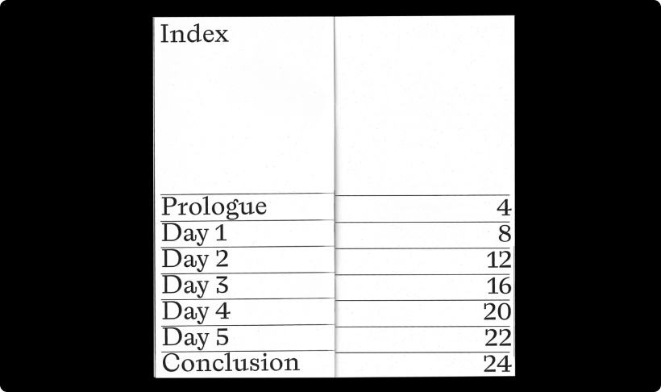
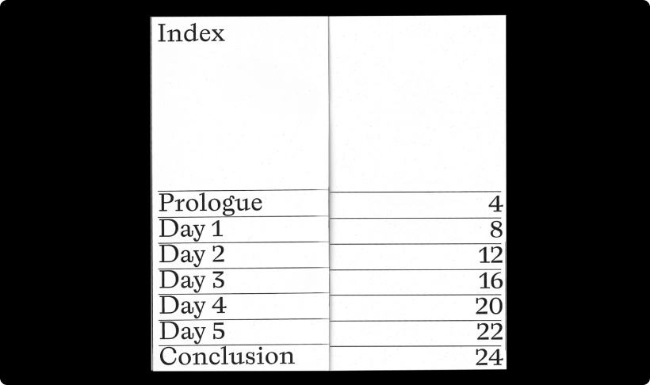
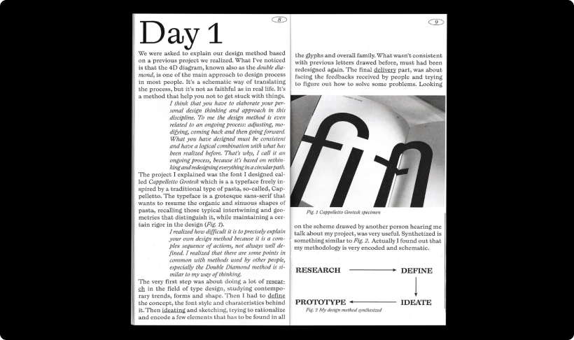
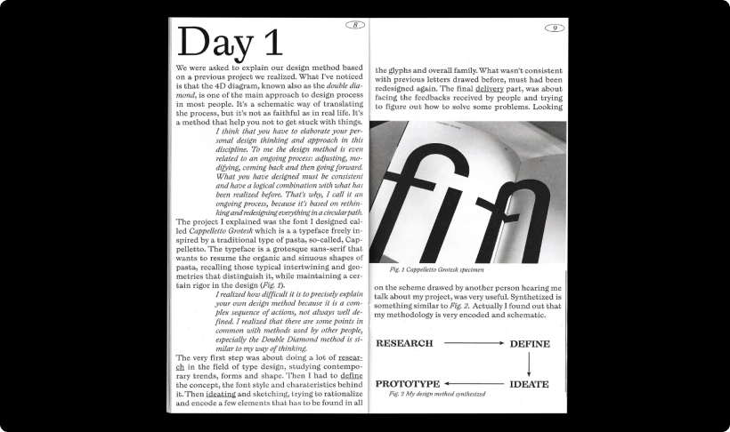
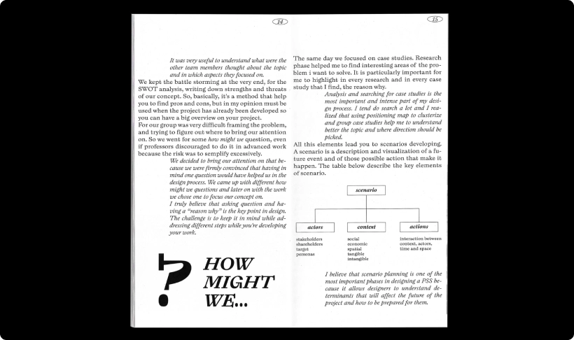
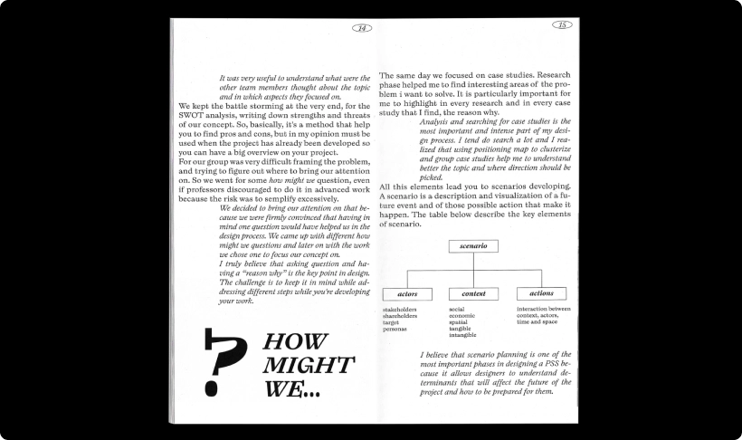

Design Methods — брошюра о дизайн-методах

продуктовый дизайн

вдохновение
Дарья Райт
Ведущий редактор в «Оди», переводчик данной оригинальной статьи

Этот проект создал дизайнер Андреа Камурани на основе курса по дизайну Миланского политехнического университета
В брошюре он изложил собственные размышления о методологии проектирования. Андреа изучал, как подходы к дизайну могут меняться в зависимости от предмета, контекста и цели
В этом личном исследовании дизайнер стремился поставить под сомнение предположения, лежащие в основе практики дизайна, и развить более глубокое понимание методологий
Так на примерах он разбирал метод дизайн-мышления, но на каждом его этапе добавлял дополнительные инструменты, которые на практике помогали ему получать более точные результаты. Например, на этапе брейншторминга дизайнер с командой не просто обсуждали идеи, а нашли три техники проведения бреншторминга и выбрали ту, которую посчитали наиболее эффективной — составление ментальной карты
Поскольку брошюра носит инновационный характер, и вёрстка получилась экспериментальной: плотной, смелой и современной

Design Methods — брошюра о дизайн-методах в среде
 
 
 
 
 
 


Design Methods — брошюра о дизайн-методах. Галерея из 25 страниц
Поделиться статьей


Подобные статьи
продуктовый дизайн
Дизайн-мышление должно было исправить мир. Что же пошло не так?
Перевод статьи Ребекки Акерманн, в которой она описала историю бурного развития дизайн-мышления в 2000-2010-х годах и её дальнейшей стагнации.

продуктовый дизайн
Что такое дизайн-мышление и как его применять в бизнесе
Дизайн-мышление — метод разработки продуктов, сервисов и услуг, ориентированных на человека, которое ставит в центр потребность пользователя

продуктовый дизайн
Книга «Сложный дизайнер» теперь в печатной версии
В прошлом году дизайнер и арт-директор Женя Арутюнов написал книгу о профессии дизайнера: культуре мышления, коммуникации, лидерстве, профессионализме